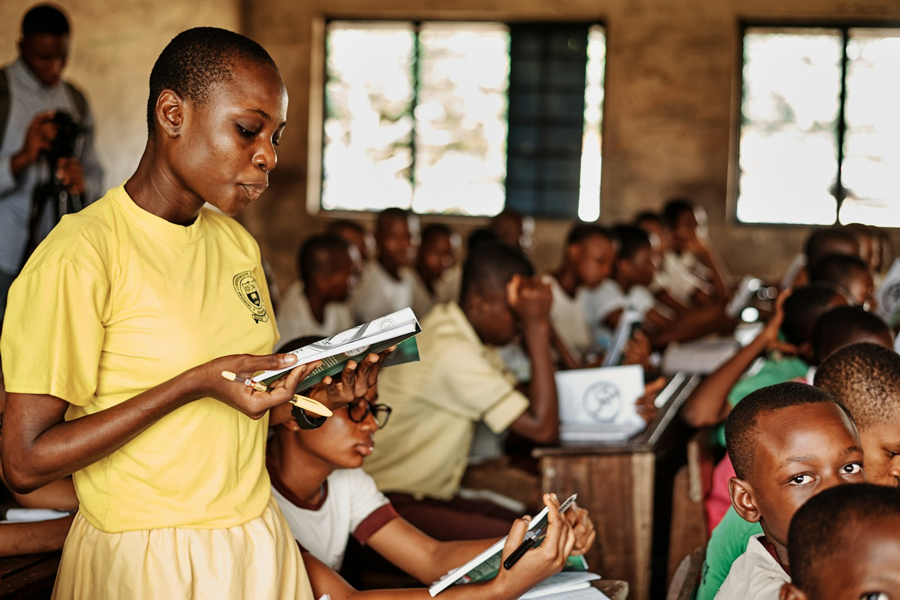

A curriculum that builds in one direction
Every subject taught at Royal Kids connects to what came before it and what comes after, so a child's seventh year of school feels like a continuation, not a series of restarts.
How the programme is structured
The school year runs across three terms, each concluding with formal assessment from Grade 1 upward. Pre-Primary pupils are assessed through observation rather than written tests, in line with how young children actually demonstrate what they know.
Class teachers in Pre-Primary and Junior Primary teach most subjects themselves, which keeps the school day coherent for younger children. From Grade 5, pupils begin moving between subject specialists for Mathematics, Natural Science, and English, easing the transition into the subject-based timetable they will meet in secondary school.
Pre-Primary: Reception and Grade 0
We believe that childhood is a time of wonder, discovery and limitless possibility. Our inquiry and play-based approach offers fresh and vibrant learning opportunities every day. Our holistic and integrated approach ensures that emergent literacy and mathematical skills are woven naturally into both classroom and outdoor experiences.
Our outdoor spaces are an extension of the classroom, offering opportunities for exploration, risk-taking, collaboration and physical development. Music, movement and physical developmental lessons led by specialist teachers provide joyful opportunities for creative expression and emotional release.
We are deeply committed to developing the whole child. Every child is unique, and our balanced programme honours individual strengths, interests and developmental pathways.
Phonics & Early Literacy
Letter-sound correspondence, blending, and sight word recognition.
Number Concepts
Counting, sorting, simple addition, and pattern recognition.
Fine Motor Skills
Pencil grip, cutting, and tracing exercises that prepare the hand for writing.
Daily Routine & Structure
Consistent classroom rituals that build independence and attention span.
Junior Primary: Grade 1 to 3
Royal Kids Private School encourages children to adopt a can-do, positive mindset. The keystone of our caring and nurturing classroom environment is our belief that each child is unique with their own strengths, weaknesses, and learning styles. We believe that children learn best when they are happy, stimulated and learning through doing. This methodology helps them develop a strong foundation in reading, writing and arithmetic, which they use as a foundation for future learning.
Children are encouraged to become independent, accountable individuals by taking responsibility for their behaviour, their own work, and their belongings, through a servant leadership approach that starts with responsibility for the self.
English
Reading comprehension, creative writing, grammar, and spelling.
Mathematics
Number operations, basic fractions, time, money, and measurement.
Environmental Studies
An introduction to the natural and social world around the child.
Afrikaans or German
An introductory second language, chosen by the parent at enrolment.
Senior Primary: Grade 4 to 7
At Royal Kids Private School, Learning for Life is a mindset and CAN DO is an attitude. There is a deliberate, progressive increase in nurturing independence, personal responsibility, and resilience through Senior Primary. Subjects expand to include Natural Science, Social Studies, Information and Communication Technology, and Artificial Intelligence, equipping learners with vital skills for the modern world alongside career-focused subject choices.
English & Second Language
Formal grammar, comprehension, and continued language study.
Mathematics
Pre-algebra, geometry, data handling, and problem solving.
Natural Science
Basic physical and life sciences, with a focus on observation and method.
Social Studies
Namibian history, geography, and civic education.
Information and Communication Technology
Digital literacy, responsible use of technology, and practical computing skills for the modern world.
Artificial Intelligence
An introduction to AI concepts and applications, equipping learners with critical thinking skills for an AI-enabled world.
Learning for Life Leadership Programme
This culminates in Grade 7, where every pupil has the opportunity to take part in the formal yet voluntary Learning for Life Leadership Programme, structured around five areas of personal development:
- School Service
- Community Service
- Physical Challenge
- Organisation
- Acquisition of a New Skill
Our approach to discipline is progressive: we aim to Catch Them Doing It Right. Pupils help draw up class contracts at the start of each year, with all expectations guided by respect for self, for peers, for teachers, and for the wider community, recognising that everyone makes mistakes and deserves help to self-correct.
Assessment and reporting
Parents receive a written progress note each month and a full report at the end of every term. From Grade 1, formal tests are written mid-term and end-term, with results discussed at a scheduled parent-teacher consultation.
| Grade | Assessment type | Frequency |
|---|---|---|
| Reception & Grade 0 | Observation-based | Ongoing, reported monthly |
| Grade 1 to 3 | Short written tests | Mid-term and end-term |
| Grade 4 to 7 | Formal examinations | Mid-term and end-term, all subjects |
Languages of instruction
English is the primary language of instruction throughout the school. Afrikaans and German are offered as second languages from Grade 1, with parents selecting one at the point of enrolment. The choice can be revisited at the start of any school year on request.
Sit in on an actual lesson
The clearest way to evaluate a curriculum is to watch it being taught. Visits include time in a classroom appropriate to your child's age.